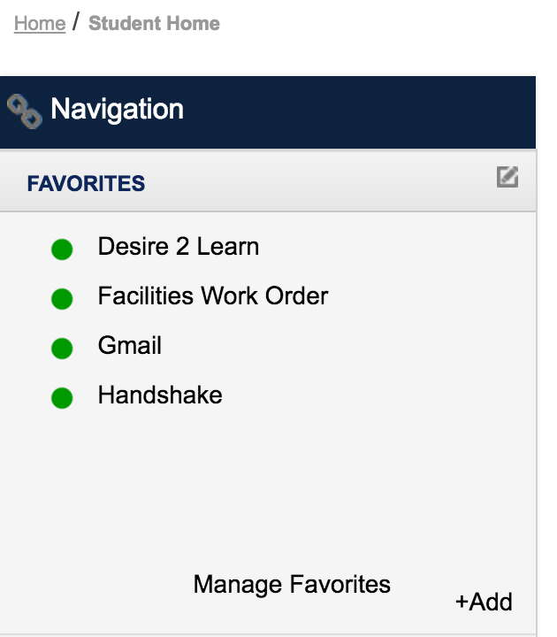
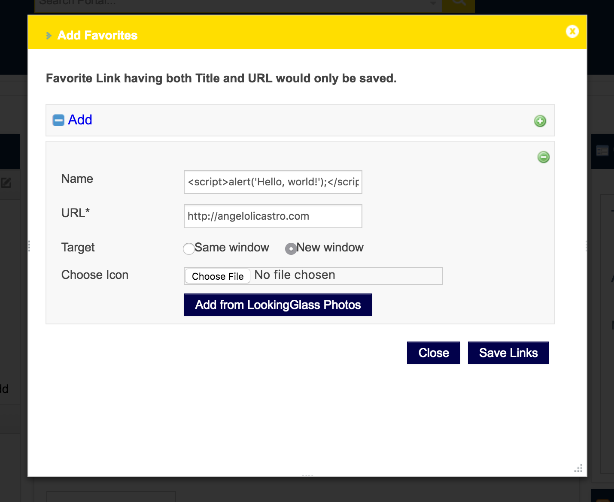
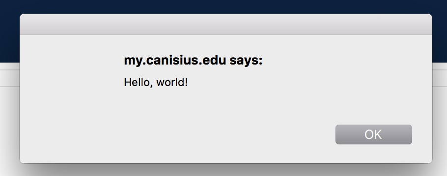
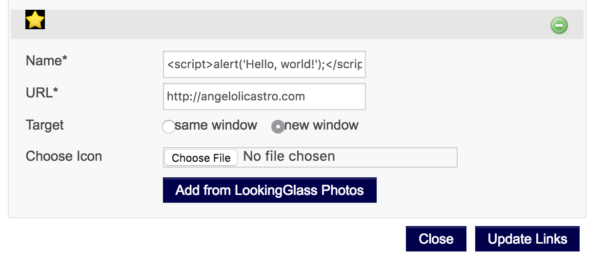

Cathy Fitzpatrick and I discovered a self-cross-site scripting (self-XSS) bug that affects the Canisius College portal, which is powered by the LookingGlass portal software. This bug affects a small number of users in a specific scenario. We realize that self-XSS bugs are not necessarily vulnerabilities by themselves, but they may lead to attacks in specific scenarios.
It is not uncommon that an institution, such as Canisius, creates accounts that multiple people can access. For example, at Canisius, student organizations are created shared accounts and, every person who needs to access the services that these shared accounts provide, such as Gmail, are given the shared password. A rogue member of a student organization may compromise the shared account by exploiting the self-XSS bug to, for example, present a fake login page that prompts a user for their personal account credentials to continue.
The LookingGlass portal software provides a feature that allows users to add their own favorite links to the Navigation portlet.

The user can add a favorite with any name and URL combination. The name and URL may include HTML, which is not properly sanitized.

When a favorite is added, the name and URL of each favorite is rendered.

The name and URL of each favorite persists indefinitely.

The following is how the favorite is rendered.
<script type="text/javascript">/*<![CDATA[*/alert(1);/*]]>*/</script>